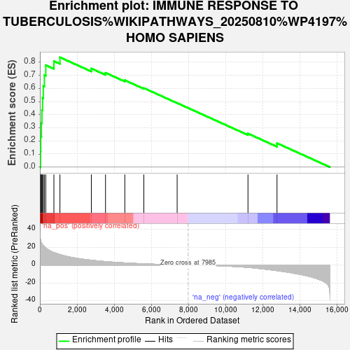
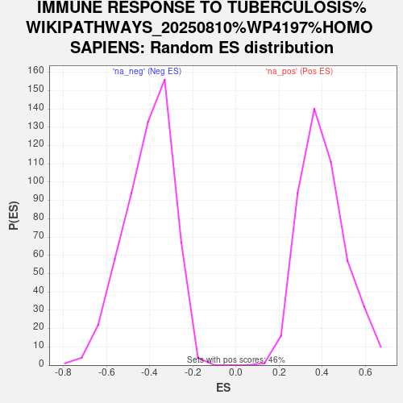

| Dataset | Combo_vs_Naive_Ranked_Genes |
| Phenotype | NoPhenotypeAvailable |
| Upregulated in class | na_pos |
| GeneSet | IMMUNE RESPONSE TO TUBERCULOSIS%WIKIPATHWAYS_20250810%WP4197%HOMO SAPIENS |
| Enrichment Score (ES) | 0.837997 |
| Normalized Enrichment Score (NES) | 2.0841627 |
| Nominal p-value | 0.0 |
| FDR q-value | 0.0013482752 |
| FWER p-Value | 0.023 |

| SYMBOL | RANK IN GENE LIST | RANK METRIC SCORE | RUNNING ES | CORE ENRICHMENT | |
|---|---|---|---|---|---|
| 1 | MX1 | 35 | 28.433 | 0.1177 | Yes |
| 2 | IFIT3 | 46 | 27.242 | 0.2320 | Yes |
| 3 | IFITM1 | 81 | 24.967 | 0.3352 | Yes |
| 4 | IRF1 | 110 | 23.981 | 0.4345 | Yes |
| 5 | STAT1 | 143 | 22.848 | 0.5289 | Yes |
| 6 | IFIT1 | 183 | 21.871 | 0.6186 | Yes |
| 7 | STAT2 | 241 | 20.657 | 0.7021 | Yes |
| 8 | OAS1 | 317 | 19.117 | 0.7780 | Yes |
| 9 | TYK2 | 755 | 14.016 | 0.8091 | Yes |
| 10 | IFI35 | 1080 | 11.762 | 0.8380 | Yes |
| 11 | IFNGR1 | 2772 | 5.428 | 0.7526 | No |
| 12 | IFNAR1 | 3536 | 3.826 | 0.7199 | No |
| 13 | JAK1 | 4577 | 2.346 | 0.6631 | No |
| 14 | SOCS1 | 5601 | 1.320 | 0.6032 | No |
| 15 | IFNGR2 | 7397 | 0.207 | 0.4891 | No |
| 16 | IFNAR2 | 11214 | -2.693 | 0.2560 | No |
| 17 | PIAS1 | 12779 | -6.321 | 0.1825 | No |
